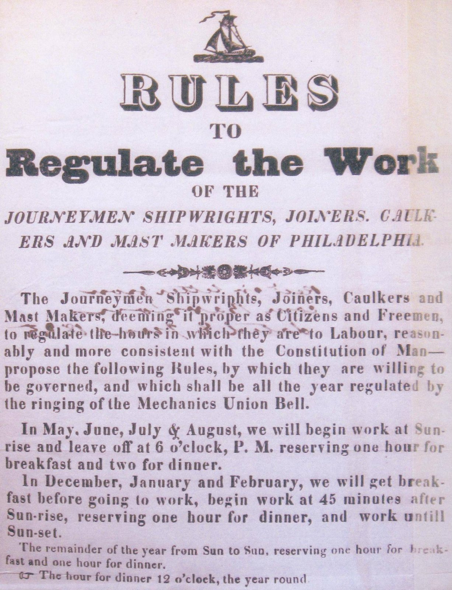

| Field | Detail |
| TOC Fit | Chapter 8 · Essay prompt 8.4 (Did Workers Become a Class?) |
| Why Here | A printed circular in which Philadelphia’s journeymen shipbuilders set out the working day they would accept from the master builders. Students can weigh it as direct evidence of skilled workers organizing across a trade, in their own words, during the 1835 ten-hour movement. |
| Treatment | Public-domain image of a printed circular; text to be transcribed from the image |
In the spring of 1835 Philadelphia’s skilled journeymen, led by coal heavers on the Schuylkill wharves and by carpenters, masons, and shipbuilders, struck for a ten-hour day, “from six to six” with time off for meals, in place of the traditional sunrise-to-sunset schedule. Supported by the city’s General Trades’ Union, the movement spread across more than a dozen trades in June 1835, and the city councils and most private employers soon granted the ten-hour day. Journeymen in the shipyards along the Delaware drew up written terms for their masters, and their circulars traveled to other ports. A copy of the Philadelphia shipbuilders’ circular was forwarded to the Secretary of the Navy by Commodore James Barron and survives in the records of the Board of Navy Commissioners; federal navy yard workers in Washington and elsewhere took up the same demand that summer. Editorial note. The plan’s source, a student exhibit page at Haverford College (“Materiality and Spectacle 2015,” item 35, “Working Regulations for Philadelphia Shipbuilders,” dated July 20, 1835, credited to the National Archives), no longer loads. This entry uses the same circular as photographed from the National Archives (Records of the Board of Navy Commissioners, Letters Received, RG 45, Entry 314, vol. 91) and posted on Wikimedia Commons as a public-domain U.S. government record. CAUTION: The Commons and Haverford descriptions were written by the same photographer; the NARA volume citation should be checked against the National Archives catalog if possible. Text transcribed for this reader from the repository image; illegible words are marked [illegible]. The Commons photograph shows no printed date on the circular, so the July 20, 1835 date rests on the archival description. |
|
 |
|
UNIT 3 · AN EXPANDING NATION | HISTORY B17A | DANIEL GARZA, M.A.
|